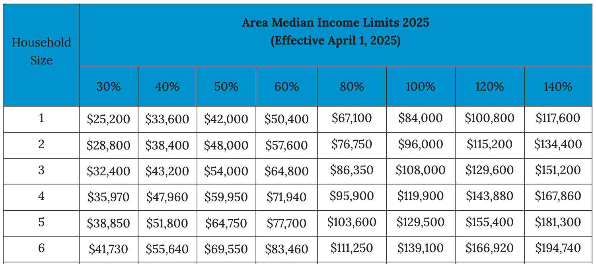
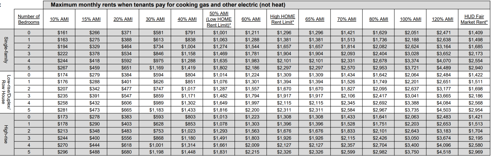

Working* in Housing Policy in Chicago
A very incomplete guide
Who is this for?
Housing policy, defined broadly, is an important and rewarding field in which to work. It can also be, however, a very opaque one to young people just starting their careers; people who have moved to a new city; or even people who already have a career in the field. The purpose of this document is to make housing work in Chicago a little bit less opaque, and to support anyone who wants to enter the field, either professionally, as a volunteer, or even just an observer — especially people who don't otherwise have a clear way in — whether they are just graduating from high school or college, moving to Chicago from elsewhere, or just gaining an interest in housing at any point in life.
Though it will likely change over time, right now it primarily consists of a modestly organized list of organizations that do work that includes housing policy — again, broadly construed.
What counts as "housing policy"?
This document emphatically rejects that "housing policy" only happens in City Council or the state legislature, or by people who have the word "policy" in their job title. Most housing policy, in fact, is enacted by people who administer programs or provide direct services through the decisions they make about how to do their jobs. (And certainly most knowledge about housing policy is gained and disseminated by the people doing those jobs, or the people directly interacting with and experiencing housing programs, or the gaps they leave in the safety net.)
What counts as "working"?
As I say above, this is not meant to be only for people looking for full-time professional work. People looking to volunteer, organize, attend neighborhood meetings or City Council hearings, or just observe the field, are all in mind for this document.
What is the "housing continuum"?
While affordable housing is often referred to in ways that make it sound like a monolith — or else sometimes described as rigidly segmented between rentals, ownership, affordable, and "luxury" market rate — it's more accurate to think of housing as a spectrum of overlapping forms of tenure and price-setting.
The diagram below is an attempt to capture one way of thinking about a "housing continuum," showing where four types of housing land, roughly, along a spectrum of income levels. Income here is represented by "AMI," or Area Median Income, a scale that the federal Department of Housing and Urban Development uses to measure affordability. It is calculated at the regional level, meaning the entire metropolitan area of Chicago shares an AMI scale. The 2025 scale is shared below the continuum diagram.


What local housing media is in Chicago?
- Block Club Chicago covers neighborhood-level development stories no one else will, but also does investigatory pieces on the Chicago Housing Authority, the Continuum of Care, and other housing issues.
- The Chicago Reader sometimes covers housing issues.
- The Chicago Sun-Times does not have a special housing focus but does cover housing issues, and often publishes freelance housing beat reporter Lizzie Kane.
- The Chicago Tribune writes regularly on housing issues.
- Crain's covers real estate and housing policy.
- Injustice Watch writes about the intersection of housing and the court system.
- South Side Weekly sometimes covers housing issues.
- WBEZ periodically covers housing issues and has done some in-depth researched stories.
- WTTW's Heather Cherone covers City politics and policy and often writes about housing.
- The Investigative Project on Race and Equity sometimes covers housing issues.
- The A City That Works newsletter often covers housing issues.
What about national sources?
Beyond the major outlets (NYT, WaPo, etc), housing-specific sources of news and analysis include:
What professional development spaces are there?
- Community Empowerment Workshop Series
- Housing Action Illinois' Housing Action Corps
- Illinois Housing Council Emerging Leaders
- Women in Planning and Development
- Women's Affordable Housing Network Illinois chapter
Please let me know about more of these! You can find me on LinkedIn or BlueSky under my full name (see bottom of the page).
What kinds of organizations do people in housing policy work for?
Government
In a field focused on public policy, one obvious place to work is the public sector. These include:
The City of Chicago
Within the City, most housing-related work will exist in three main places:
- The Mayor's Office. Typically, relevant positions are under the Chief of Policy (titles like Policy Analyst, etc.) or under the Deputy Mayor for Business and Neighborhood Development (BND). Almost all positions in the Mayor's Office are Shakman-exempt, meaning they aren't necessarily posted on the City's jobs portal and don't have to go through normal hiring procedures.
- The Department of Housing (DOH). The largest and most varied set of positions. Most DOH positions work in program implementation, either in multifamily (largely executing LIHTC deals) or "single-family" (1–4 unit buildings, focused on homeownership). There's also a bureau of preservation focused on programs that rehab vacant or distressed properties. DOH also has explicitly policy-related roles focused on internal policymaking, legislation, community engagement, planning, and evaluation. DOH positions will generally not be Shakman-exempt.
- The Department of Family and Support Services (DFSS). More focused on homelessness-related policy and implementation, including the shelter system and support services, as well as coordination with the Continuum of Care.
- The Department of Planning and Development (DPD). Fewer housing-specific functions than one might imagine, but interesting roles related to zoning and planning, in particular on regional planning teams behind proactive corridor rezonings.
- City Council. 50 alderpeople, all with staff. Some have policy directors; some have development directors managing proposed projects requiring Council action. The Committee on Housing and Real Estate is the most housing-policy-focused committee.
The Chicago Housing Authority
A "sister agency" of the City with its own budget and governing body (the CHA Board), appointed by the Mayor and confirmed by City Council. The largest landlord in Chicago, the Chicago Housing Authority operates or oversees over 20,000 public housing units and close to 50,000 tenant-based vouchers. Roles related to development, voucher administration, resident services, policy, data, and planning.
Cook County
Suburban Cook is almost exactly the size of Chicago; Cook County overall is the second largest county by population in the country. The Office of the President has a policy team; housing-relevant roles also in the Department of Planning and Development. The Housing Authority of Cook County is the second largest housing authority in Illinois. The Cook County Assessor's Office establishes property values for taxation purposes and administers the Affordable Housing Special Assessment Program.
The State of Illinois
Some roles may be based in Springfield, but many are in Chicago:
- The Governor's Office — housing policy work generally under the Deputy Governor of Health and Human Services.
- The Department of Human Services (IDHS) — closest to homelessness work; includes the Office to Prevent and End Homelessness.
- The Illinois Housing Development Authority (IHDA) — closest analog to DOH at the City; implements multifamily affordable housing and homeownership programs; has a large policy-related team called Strategic Planning and Research (SPAR).
Chicago Metropolitan Agency for Planning (CMAP)
Chicago's Metropolitan Planning Organization; largely focuses on transportation-related issues, but Planning and Regional Policy and Implementation teams touch on housing, zoning, and transit-oriented development.
Metropolitan Mayors Caucus
Not itself public sector, but an instrument of suburban Chicago municipal governments providing advocacy and technical assistance, including on housing issues. mayorscaucus.org
Research (University-Based)
These organizations tend to do less explicit advocacy, and sometimes (but not always) hire predominantly people already affiliated with their associated university.
- Center for Urban Research and Learning at Loyola University.
- Inclusive Economy Lab at the University of Chicago. Has conducted research on housing stability and evaluation of housing programs.
- Institute for Housing Studies at DePaul University. The leading center for research on housing stock and housing market dynamics in Chicago and Cook County. Frequently partners with other organizations.
- Mansueto Institute for Urban Innovation and Kreisman Initiative for Housing Law and Policy at the University of Chicago. Offer fellowships for University of Chicago students and hold housing-related events.
- Voorhees Center at the University of Illinois – Chicago. Housing-related research has largely focused on neighborhood change. Predominantly hires research staff from the UIC student body.
Research and Advocacy
These organizations tend to advocate for policy change through research and sharing technical expertise via direct engagement with policymakers and elected officials.
- Center for Neighborhood Technology. Does deep research and partnerships with governments and organizations around the country.
- Chicago Area Fair Housing Alliance. A membership-based organization that performs research and advocacy on fair housing issues.
- Chicago Coalition to End Homelessness. Provides research, advocacy, and organizing around homelessness issues.
- Chicago Rehab Network. Founded in the 1970s as a coalition of community development organizations; does state and local housing and community development research and advocacy.
- Civic Committee. Housed at the Commercial Club; does not generally work directly on housing but addresses some related issues, such as transportation.
- Elevated Chicago. A citywide coalition advocating for and running programming related to equitable transit-oriented development, including housing.
- Health and Medicine Policy Research Group. Works on a variety of health-related justice issues, including housing.
- Housing Action Illinois. The largest statewide coalition of progressive housing organizations; very involved in a wide range of state housing legislation and advocacy campaigns.
- Illinois Black Advocacy Initiative. Does not have a specific focus on housing, but its advocacy has included housing priorities.
- Illinois Justice Project. Focused on reform of the criminal justice system; advocacy includes a significant amount of work around reentry housing.
- Impact for Equity (formerly BPI). A law and policy center known for its work on public housing, including as litigants in the historic Gautreaux racial segregation case against the CHA. The author of this document is the Housing Director at IFE.
- Latino Policy Forum. Advocates on housing issues, among others, on behalf of Chicago's Latino community.
- Metropolitan Planning Council. Founded in the 1930s; one of the oldest and largest non-governmental planning and policy organizations in the city; has traditionally had a close relationship with City Hall.
- Preservation Compact. The policy arm of the Community Investment Corporation; does work focused on preservation of legally restricted and "naturally occurring" affordable housing.
- Woodstock Institute. Housing work focuses on lending and finance, especially with respect to homeownership.
Community Development Financial Institutions (CDFIs)
These organizations directly provide financial services with a social mission, often in gaps left by market-driven lenders.
- Community Investment Corporation. Provides financing for acquisition, rehabilitation, and preservation of rental housing, with a focus on "naturally occurring" affordable housing. Often tapped by the City to implement loan-based multifamily programs.
- Cook County Loan Fund. Provides financing to community development efforts, including housing.
- Enterprise Community Partners. Local office of one of the nation's largest CDFIs.
- Greenwood Archer Capital. A CDFI based on the far South Side that primarily serves small businesses but also makes some housing investments.
- IFF. A financial institution dedicated to serving nonprofits, including those creating or preserving housing.
- Local Initiatives Support Corporation. Local office of one of the nation's largest CDFIs.
- Neighborhood Housing Services of Chicago. Provides financing for homeownership, including small multifamily buildings like two-flats; has a policy team that works at the state and local level.
Community- and Membership-Based Advocacy Organizations
These groups tend to advocate and wield power by organizing constituents and communities and their lived experiences.
- Abundant Housing Illinois. Organizes at the local and state level for zoning reform and increased housing supply.
- Brighton Park Neighborhood Council. Southwest Side community organizing and service center that offers housing counseling.
- Chicago Housing Initiative. A coalition of organizations working on housing justice issues, especially related to the CHA and low-income tenants.
- Communities United. Based in Albany Park, West Ridge, Austin, Roseland, and Belmont Cragin; does grassroots organizing, including on housing issues.
- Housing Justice Coalition. A coalition working on housing justice issues; has worked on Just Cause for Eviction campaign.
- Jane Addams Senior Caucus. Does tenant organizing and advocacy around senior citizen housing issues.
- Jewish Council on Urban Affairs. Organizes Chicago's Jewish community on a number of issues, including housing.
- Kenwood Oakland Community Organization (KOCO). Working on the south lakefront; does grassroots housing organizing and advocacy.
- Lugenia Burns Hope Center. A Bronzeville-based service and advocacy organization; housing advocacy focus includes CHA.
- One Northside. A grassroots organization based on the north lakefront; housing work has focused on SROs and renters' rights.
- Palenque LSNA. Based in Logan Square; housing work has focused on preventing displacement and addressing gentrification on the Northwest Side.
- People for Community Recovery. Based on the far South Side; advocates for housing and environmental justice, among other issues.
- Pilsen Alliance. A Pilsen-based advocacy organization; housing work includes anti-displacement organizing.
- South Side Together. Based in Woodlawn and South Shore; has led the community benefits agreements campaigns around the opening of the Obama Center and does tenant organizing.
- Southwest Organizing Project. Based on the Southwest Side; organizes around a number of issues, including housing.
Development, Service, and Advocacy Organizations
These organizations tend to predominantly provide direct services or do housing development, but may also have explicit policy divisions.
- Access Living. Provides services and advocacy for Chicagoans with disabilities.
- All Chicago. Administers the Chicago Continuum of Care; provides services and research on homelessness.
- Apna Ghar. Provides emergency and transitional housing, among other services, to people who have experienced gender-based violence.
- Bickerdike. An affordable housing developer and manager based on the Northwest Side.
- Brinshore. A developer of affordable rental housing.
- Celadon Partners. A Chicago-based affordable developer that has worked in a number of different communities.
- Chicago Metropolitan Housing Development Corporation. A unique housing manager that acquires and manages "naturally occurring" affordable housing, typically with little or no public subsidy.
- Chicago Neighborhood Initiatives. A community development firm doing both commercial and affordable residential development focused on the Far South Side.
- Chinese American Service League. Provides a wide range of services, including housing counseling.
- Claretian Associates. A community development organization based in South Chicago that also provides a range of services.
- The Community Builders. A local office of a major national affordable housing developer.
- Community Partners for Affordable Housing. A housing services organization based in the northern suburbs.
- Connections for the Homeless. A social service and advocacy center based in Evanston.
- DL3. A community development firm that does commercial, institutional, and residential development.
- Elevate Energy. A national nonprofit based in Chicago that works to deploy clean and sustainable energy solutions, including in residential buildings.
- Full Circle Communities. An affordable developer that works in Chicago and the surrounding suburbs.
- Garfield Park Community Council. Provides a range of services, including housing counseling and tenant-landlord support.
- Habitat Company. A major development firm that works in both market-rate and affordable housing.
- HANA Center. A nonprofit focused on Korean-American and Asian-Americans in the Chicago area; does community organizing as well as providing housing services and managing affordable housing.
- Hispanic Housing Development Corporation. An affordable housing developer and manager.
- Housing Choice Partners. Provides services to people with rental subsidies, including Housing Choice Vouchers.
- Housing Opportunities Development Corporation. An affordable developer focused on the northern suburbs.
- Illinois Housing Council. A membership organization for developers and others in the affordable housing ecosystem.
- Inner City Muslim Action Network. A nonprofit that provides services, does community development, and engages in advocacy based on the South Side.
- Lawndale Christian Development Corporation. An affordable development and community organizing organization based in North Lawndale.
- LUCHA. An affordable housing developer and service provider based in Humboldt Park.
- Mercy Housing Lakefront. Part of the national Mercy Housing organization; an affordable developer operating in Illinois, Wisconsin, and Indiana.
- Metropolitan Tenants Organization. Provides services and support to tenants as well as community organizing and advocacy.
- Northwest Center. Based in Belmont Cragin; provides a variety of services and does community organizing and advocacy, including around housing issues.
- Oak Park Regional Housing Center. A fair housing center founded in the 1970s to support racial integration in Oak Park.
- Open Communities. A fair housing center based in Evanston.
- Preservation of Affordable Housing. A national affordable housing developer with a Chicago office; work has been focused in and around Woodlawn.
- Related Midwest. A large development company that does both high-end market-rate and affordable development.
- Resident Association of Greater Englewood. Provides a number of services, including homebuyer grants.
- The Resurrection Project. An advocacy, social service, and affordable development organization based in Pilsen; also acts as a CDFI, providing financing for homebuying and rehab.
- A Safe Haven.
- Sarah's Circle. Provides housing and services for women experiencing or at risk of homelessness.
- Spanish Coalition for Housing. Provides a wide variety of housing-related services with offices on the Northwest and Southeast Sides.
- Supportive Housing Providers Association. A statewide association of supportive housing organizations.
- Thresholds. Provides housing and other services to people experiencing serious mental illnesses.
Legal and Advocacy
These organizations provide legal services and representation as well as engaging on policy-related work.
- Cabrini Green Legal Aid. A legal aid, social service, and community organizing organization.
- HOPE Fair Housing. A fair housing center based in the western suburbs that provides housing services.
- Law Center for Better Housing. A legal aid and advocacy organization; helps to administer the City's Right to Eviction Counsel pilot program.
- Chicago Lawyers Committee for Civil Rights Under the Law. An affiliate of a national organization; partners with community-based organizations to advocate for housing justice and engages in litigation.
- Shriver Center on Law and Poverty. Among other issues, advocates for fair housing and other housing justice issues. Note: As of 2026, the Shriver Center has folded as an organization.
- Uptown People's Law Center. A legal aid center with a focus on tenants' rights.
Philanthropy
- Chicago Community Trust. One of the largest local philanthropies; supports a wide variety of nonprofits as well as engaging in its own policy advocacy.
- Chicago Funders Together to End Homelessness. A group of funders that works to support homelessness-related service and policy initiatives.
- Crown Family Philanthropies. Has a focus area in health and human services that includes housing and homelessness work.
- Polk Bros. Foundation. Supports a variety of housing organizations.
- Schreiber Family Foundation. A family foundation with a housing focus.
Notable Reports
Reports from the last decade or two that capture a particular issue, moment in time, or have been especially influential in shaping housing advocacy and policy in Chicago.
Energy Efficiency
- "Segmenting Chicago Multifamily Housing to Improve Energy Efficiency Programs." Elevate Energy, 2017. [PDF]
Housing Stock
- Local Housing Profiles. Chicago Metropolitan Agency for Planning and the Institute for Housing Studies, 2025.
- "Patterns of Lost 2 to 4 Unit Buildings in Chicago." Institute for Housing Studies, 2021.
- "Characteristics of the 2 to 4 Stock in Chicago Neighborhoods." Institute for Housing Studies, 2021.
Ownership
- "2023 Mortgage Lending Observations." Woodstock Institute, 2025. [PDF]
Racial Equity
- "Racial Equity Impact Assessment of the Qualified Allocation Plan." Chicago Department of Housing, 2021. [PDF]
- "Our Equitable Future: A Roadmap for the Chicago Region." Metropolitan Planning Council and Urban Institute, 2018. [PDF]
- "The Cost of Segregation: Lost Income. Lost Lives. Lost Potential." Metropolitan Planning Council and Urban Institute, 2017. [PDF]
Rental Housing Affordability
- "Affordable Requirements Ordinance Task Force Report." Chicago Department of Housing, 2020. [PDF]
- "State of Rental Housing" series. Institute for Housing Studies, 2005–2023.
Zoning
- Zoning and Land Use Assessment. Metropolitan Planning Council, 2025. Includes:
- "Equitable Transit-Oriented Development Policy Plan." City of Chicago, 2021. [PDF]
- "Unlocking Accessory Dwelling Units in Chicago." Urban Land Institute Chicago, 2020. [PDF]
- "Working Toward a Healed City: How Chicago Can Build Equitable Communities from the Ground Up." Chicago Area Fair Housing Alliance and Shriver Center, 2019. [PDF]
- "A City Fragmented: How Race, Power, and Aldermanic Prerogative Shape Chicago's Neighborhoods." Chicago Area Fair Housing Alliance and Shriver Center, 2018. [PDF]
- "Stalled Out: How Empty Parking Spaces Diminish Neighborhood Affordability." Center for Neighborhood Technology, 2016. [PDF]
- "Transit-Oriented Development in the Chicago Region: Efficient and Resilient Communities for the 21st Century." Center for Neighborhood Technology, 2016. [PDF]
About the Author
Daniel Kay Hertz is currently Director of Housing at Impact for Equity, a law and policy center. Previously he served as Director of Policy, Research, and Legislative Affairs for the Chicago Department of Housing; Research Director for the Center for Tax and Budget Accountability; and Senior Fellow at City Observatory. He is also the author of The Battle of Lincoln Park: Urban Renewal and Gentrification in Chicago (Belt, 2018). He grew up in Albany Park and West Ridge and currently lives in Edgewater.
He can be found on LinkedIn and BlueSky under his full name.